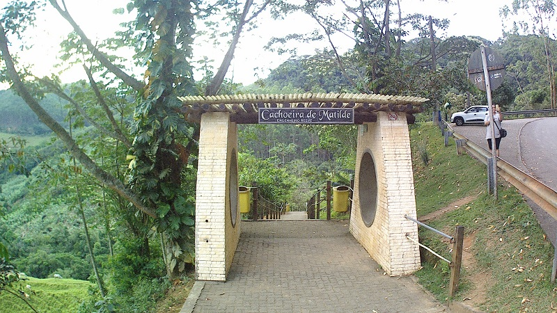

| Matilde | Descriçao |
|---|---|
|  |
Uma cidade area total de 95 mil metros quadrados, localizada em alfredo chaves ES,contem 363 domicilios, com mais ou menos 2500 habitantes |
|
Uma pequena cidade no interior de alfredo chaves com mais ou menos 2500 habitantes, um lugar bonito, repleto de arvores, rios, lagoas e etc, uma lugar nas montanhas capixaba muito procurado para o turismo |